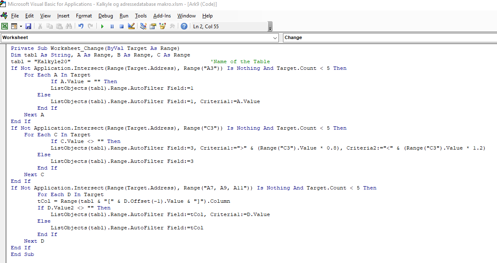
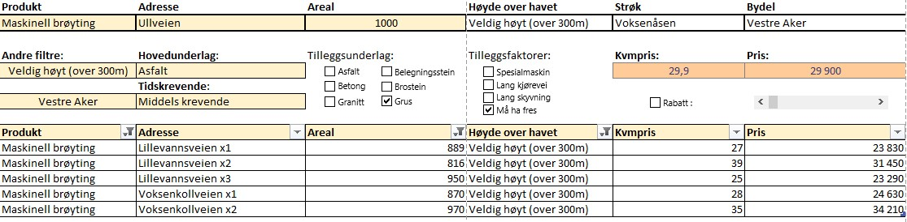
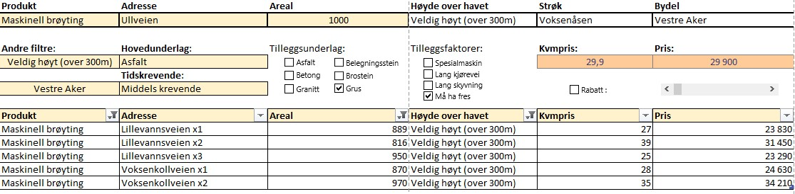

Project: Price calculus
Introduction
In my current company, which offers services within outdoor maintenance, I saw a need for pricing certain services more accurate. For services like snow plowing, gritting and sweeping, throughout the industry, most offer prices which are mostly based on the number of square meters at an adress. This is mostly done manually and requires having employees with extensive experience in the industry to get it right. My idea was that this could be done more accurate and more systematically. In addition, it will be easier to follow a common strategy when everyone who negotiates prices use a common tool to do this. I developed this price calculus in Norwegian.
Data processing
To achieve this, the idea was to create a price calculus for all winter services. This includes services such as snow ploughing, gritting and salting. These are seasonal services for which customers pay a fixed seasonal price, regardless of how much the service has to be conducted during a season. With a price calculus, a seller will have to enter certain price-influencing factors related to the address. These factors are weighed in the calculus and will provide an indicative price. In addition, I thought it might be a good idea to give the seller an overview over all adresses that are restricted by similar factors. In this way, a seller can compare the indicative price with the price of similar adresses before an actual price is set.
I started by creating a table in Excel that is automatically filtered when certain values are entered in certain cells. My starting point was to use our own address database which contains addresses, the type of service, prices, number of square metres and more. I downloaded this data as a comma separated file in Excel, and I combined it with an overview of all street names in Oslo with the associated district ("bydel") and neighbourhood ("strøk") in Oslo. In this way, I would be able to filter for addresses within the same district or even neighbourhood. In addition, it would allow me to provide every address with an altitude indicator. The altitude of an address affects the price, as addresses "at high altitude" generally experience more winter weather. Since the price a customer pays is seasonal, addresses "at high altitudes" should therefore be priced higher. Therefore, I merged these tables and created one table that contained already existing agreements/addresses with the type of service we provide there paid, the number of square metres, the altitude, price, price per square metre, district and neighbourhood.
Excel VBA macros
In order to make this calculus as user-friendly as possible, I had to keep it simple and ensure that the desired result was achieved with the fewest possible clicks. To achieve that, I used a macro. As I have only worked with basic macros before this was a bit challenging, but I managed finally to set up a code that makes the table filter automatically when certain values are entered.
Final calculus
The finished price calculus is shown in the pictures below. These are fictional addresses and prices. On the left is the calculus as it looks before it is put into use. On the right we see that the user has entered certain values, the table has been filtered and the calculus has given us an indicative price. The seller has, among other things, entered which service is to be priced, in which area the new address is located and how many square metres ("areal") it counts. The only subjective value entered by the seller is the extent to which this is a time-consuming address ("tidskrevende"). In this case, the user wants to price a service called maskinell brøyting or mechanical plowing. The user has also indicated that there is gravel ("grus") at the address and that a snow blower ("må ha fres") must be used, two factors that increase the price. Based on the values that were entered, the table has been filtered to only show addresses were we provide mechanical plowing, which are above 300 meters in altitude and are located in the district "Vestre Aker". The indicative price will thus be NOK 29 990, which is just under NOK 30 per square metre.
 

Further work
Before this calculus can be used, a price strategy must of course be set. Ultimately, the level of the indicative price given certain factors is of course a purely strategic decision. In addition, the table must be kept up to date, which will require some manual work.